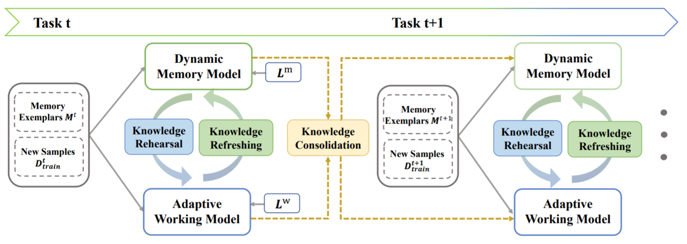

In this paper, we propose a novel rehearsal-based framework for lifelong person re-identification via knowledge refreshing and consolidation.

Video
Citation
If you find this repository useful in your research, please consider citing:
@inproceedings{yu2022lifelong,
title={Lifelong Person Re-Identification via Knowledge Refreshing and Consolidation},
author={Chunlin Yu and Ye Shi and Zimo Liu and Shenghua Gao and Jingya Wang},
booktitle={Proceedings of the AAAI Conference on Artificial Intelligence (AAAI)},
year={2022}
};